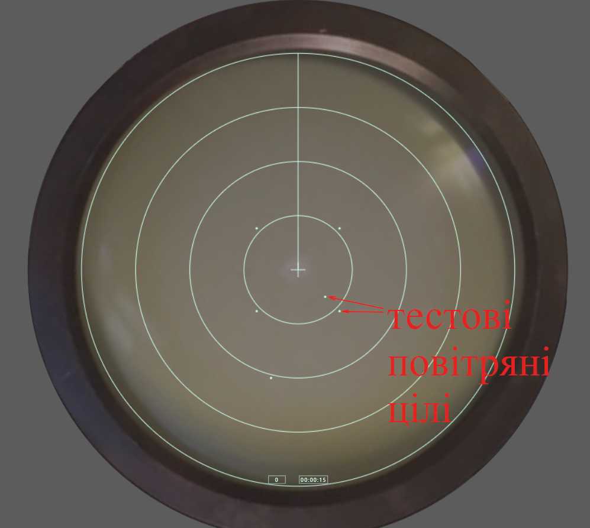

(З міркувань безпеки більшість блоків і елементів керування прихована, а функціонал та вигляд відкритих елементів — змінено.)
Модель доступна за посиланням: посилання

Після запуску програми на екрані РЛС можна побачити рухомі тестові повітряні цілі у вигляді точок.